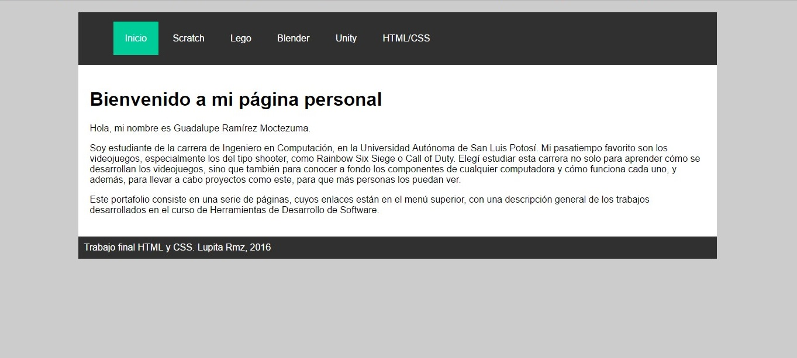

HTML/CSS
Descripción: Para HTML/CSS primero hicimos un conjunto de páginas web, una por cada tema que vimos en clase. El trabajo final es esta página precisamente, en cuyo menú se accede a una descripción de cada proyecto que realizamos utilizando diferentes herramientas.
Características:
- El portafolio tiene una página de inicio con una presentación y una descripción de este trabajo
- El portafolio tiene una página para cada herramienta vista en clase
- Cada página tiene un estilo, un menú de encabezado, contenido, y un pie de página
- El menú tiene enlaces para las demás páginas
- Cada página tiene:
- Un titular con el nombre del trabajo
- Un párrafo con la descripción del trabajo
- Una lista no ordenada con las características del trabajo
- Una imagenes del trabajo
- Un párrafo con la opinión personal acerca del trabajo
Imágenes:

Opinión personal: Este proyecto me pareció muy interesante, ya que, además de ver la manera de organizar la información en cada página, había que poner atención a la vista y estilo que se les daría.